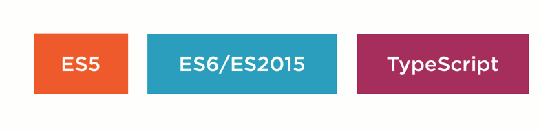

http://mbranko.github.io/webkurs
Ovo je deo web kursa

Na zvaničnoj stranici jezika:
TypeScript is a typed superset of JavaScript that compiles to plain JavaScript.
$ npm install -g typescript
$ mv mycode.js mycode.ts
$ tsc mycode.ts
Može da otkrije probleme i u postojećem JS!
JavaScript
> var a = 123;
> a.trim()
TypeError: a.trim is not a function
run-time
TypeScript
> var a: string = 123;
> a.trim()
Cannot convert 'number' to 'string'
compile-time
TS compile-time
var a: string = 123;
a.trim()
TS run-time
var a = 123;
a.trim()
| Java | TypeScript |
|---|---|
Object |
any |
void |
void |
boolean |
boolean |
int, long, ... |
number |
String, char |
string |
Type[] |
type[] |
var find: (elem: string, elems: string[]) => string =
function(elem, elems) {
...
}
var languages = [ { name: "TypeScript", ext: "ts"},
{ name: "JavaScript", ext: "js"},
{ name: "Java", ext: "java" }]
function findByName(name, elems) {
var elem;
elems.forEach(function(index, value) {
if (value.name.toLower() === name.toLower())
elem = value;
})
return elem;
}
var languages = [ { name: "TypeScript", ext: "ts"},
{ name: "JavaScript", ext: "js"},
{ name: "Java", ext: "java" }]
interface Language { // <-- duck typing!!! ^^
name: string
ext: string
}
function findByName(name: string, elems: Language[]) {
var elem: Language;
elems.forEach(function(value, index) {
if (value.name.toLowerCase() === name.toLowerCase())
elem = value;
})
return elem;
}
class Concert {
artist: String
price: number
}
class Concert {
private static MAX_TICKETS = 500
constructor(public artist: string, public tickets: number) {
if(tickets > Concert.MAX_TICKETS) {
throw new Error("Too many tickets!")
}
}
buyTickets(amount: number) {
if(amount <= this.tickets)
this.tickets -= amount
else
throw new Error("Not enough tickets!")
}
}
class RockConcert extends Concert {
constructor(name: string, tickets: number, public volume: number = 11) {
super(name, tickets)
}
buyTickets(amount: number) {
if(amount % 2 === 1)
throw new Error("Should come in pairs")
super.buyTickets(amount)
}
}
var concert = new Concert("Sting", 50)
var rockConcert: Concert = new RockConcert("ACDC", 100)
rockConcert.buyTickets(3)
interface MyInterface {
// call signature
(param: number): string
member: number
optionalMember?: number
myMethod(param: string): void
}
var instance: MyInterface = ...
instance(1)
Možemo ih koristiti da opišemo podatke koji se vraćaju iz REST poziva
$.getJSON('user/123').then((user: User) => {
showProfile(user.details)
})
// User je interfejs
Možemo kasnije dodavati u interfejs
interface Point {
x: number; y: number;
}
declare var myPoint: Point;
interface Point {
z: number;
}
var myPoint.z; // Dozvoljeno!
enum Language { TypeScript, Java, JavaScript }
var lang = Language.TypeScript
var ts = Language[0]
ts === "TypeScript"
enum Language { TypeScript = 1, Java, JavaScript }
var ts = Language[1]
Može biti obavezna:
$ tsc --noImplicitAny mycode.ts
Kao u Javi:
Nije kao u Javi:
module StorageModule {
export interface Storage {
store(content: string): void
}
var privateKey = 'storageKey'
export class LocalStorage implements Storage {
store(content: string): void {
localStorage.setItem(privateKey, content);
}
}
export class DevNullStorage implements Storage {
store(content: string): void { }
}
}
var storage: StorageModule.Storage = new StorageModule.LocalStorage();
storage.store('testing');
var StorageModule;
(function (StorageModule) {
var privateKey = 'storageKey';
var LocalStorage = (function () {
function LocalStorage() {
}
LocalStorage.prototype.store = function (content) {
localStorage.setItem(privateKey, content);
};
return LocalStorage;
})();
StorageModule.LocalStorage = LocalStorage;
var DevNullStorage = (function () {
function DevNullStorage() {
}
DevNullStorage.prototype.store = function (content) {
};
return DevNullStorage;
})();
StorageModule.DevNullStorage = DevNullStorage;
})(StorageModule || (StorageModule = {}));
var storage = new StorageModule.LocalStorage();
storage.store('testing');
return
function(arg1) {
return arg1.toLowerCase()
}
(arg1) => arg1.toLowerCase()
this je u leksičkom opsegu; ne moramo više pisati
var that = this;
class FatArrow {
line: HTMLElement = document.createElement("hr")
constructor() {
var button = document.createElement("button")
button.textContent = "Click me!"
button.addEventListener("click", function(event: MouseEvent) {
document.body.appendChild(this.line)
console.log(this)
})
document.body.appendChild(button)
}
}
new FatArrow()
class FatArrow {
line: HTMLElement = document.createElement("hr")
constructor() {
var button = document.createElement("button")
button.textContent = "Click me!"
button.addEventListener("click", (event: MouseEvent) => {
document.body.appendChild(this.line)
console.log(this)
})
document.body.appendChild(button)
}
}
new FatArrow()
@someDecoratorExpression()
class Car {
@propertyDecorator() manufacturer: string;
constructor(@paramDecorator() manufacturer: string) {
}
@methodDecorator()
drive() {
}
}
any
// cart.ts
module Webshop {
export class Cart { ... }
}
// main.ts
module Webshop {
export class Catalog { ... }
}
module Webshop.Cart.Backend {
...
}